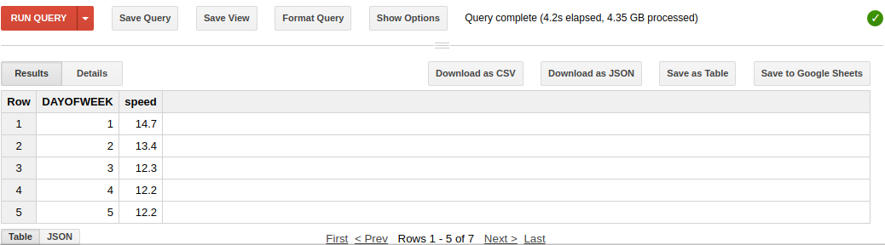
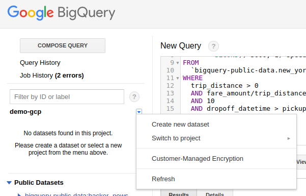
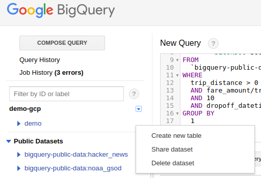

BigQuery is a fully-managed, petabyte-scale, low-cost enterprise data warehouse for analytics. BigQuery is serverless. You do not need to set up and manage clusters.
A BigQuery dataset resides in a project. A dataset contains one or more tables with data.
In this codelab, you will use the BigQuery web UI to query public datasets, load your own data, and export data to a Cloud Storage bucket.
What you'll learn
- How to query public datasets
- Export results
Step 1
Open the Google Cloud Platform Console, and if necessary, select the "demo-gcp" project.
Step 2
Go to Bigquery
Step 3
In the lateral bar, in Filter by id or label type, type yellow. In Public Datasets, expand nyc-tlc:yellow (bigquery-public-data:new_york). Click over the table trips.
Step 4
In the main panel, first you can see the schema of the table (pay attention in the type and if the field is nullable or not).
After that, click in Details button to see the size and the number of rows.
Finally, click over Preview to see some records.
Step 5
In the main panel, first you can see the schema of the table (pay attention in the type and if the field is nullable or not).
Step 1
Click over Compose Query to open the SQL editor.
Step 2
How many trips did Yellow taxis take each month in 2015? Copy the following code
SELECT
TIMESTAMP_TRUNC(pickup_datetime,
MONTH) month,
COUNT(*) trips
FROM
`bigquery-public-data.new_york.tlc_yellow_trips_2015`
GROUP BY
1
ORDER BY
1After copy the query, you will see the error
Error: 3.17 - 4.7: Unrecognized function timestamp_trunc [Try using standard SQL (https://cloud.google.com/bigquery/docs/reference/standard-sql/enabling-standard-sql)]Click over Show Options and uncheck Use Legacy SQL (don't click Run Query yet). You could observe that the console shows that it's a valid query and the query will process 1.09 GB when run.
Click over Run Query now.
When the query will finish, you could see the results and you could see the how much time the query takes and how many data was processed.
Finally, we are going to execute the same query to see how the cache works (you could see that the time is slower and you see that it's marked as cached)
Step 3
What was the average speed of Yellow taxi trips in 2015?
SELECT
EXTRACT(HOUR
FROM
pickup_datetime) hour,
ROUND(AVG(trip_distance / TIMESTAMP_DIFF(dropoff_datetime,
pickup_datetime,
SECOND))*3600, 1) speed
FROM
`bigquery-public-data.new_york.tlc_yellow_trips_2015`
WHERE
trip_distance > 0
AND fare_amount/trip_distance BETWEEN 2
AND 10
AND dropoff_datetime > pickup_datetime
GROUP BY
1
ORDER BY
1Step 4
You can use Cloud Console too. Go back to Google Console and in the top right corner of the console window, click the Activate Google Cloud Shell button ( ).
).
bq query --use_legacy_sql=false '
SELECT
EXTRACT(DAYOFWEEK
FROM
pickup_datetime) DAYOFWEEK,
ROUND(AVG(trip_distance / TIMESTAMP_DIFF(dropoff_datetime,
pickup_datetime,
SECOND))*3600, 1) speed
FROM
`bigquery-public-data.new_york.tlc_yellow_trips_2015`
WHERE
trip_distance > 0
AND fare_amount/trip_distance BETWEEN 2
AND 10
AND dropoff_datetime > pickup_datetime
GROUP BY
1
ORDER BY
1'
Step 1
We will execute the previous query again from BigQuery console.
SELECT
EXTRACT(DAYOFWEEK
FROM
pickup_datetime) DAYOFWEEK,
ROUND(AVG(trip_distance / TIMESTAMP_DIFF(dropoff_datetime,
pickup_datetime,
SECOND))*3600, 1) speed
FROM
`bigquery-public-data.new_york.tlc_yellow_trips_2015`
WHERE
trip_distance > 0
AND fare_amount/trip_distance BETWEEN 2
AND 10
AND dropoff_datetime > pickup_datetime
GROUP BY
1
ORDER BY
1Below the results, you have the option to:
- Download as CSV
- Download as JSON
- Save as Table
- Save to Google Sheets

Step 2
We will save the query as Table. Before that, we need to create the dataset. Select the current project (demo-gcp) and select Create new dataset

Step 3
In Dataset ID put demo, select the EU region and click OK.
Step 4
Click over Save as Table. In the field Destination dataset, type demo and don't change Destination table from the default.
Step 1
Expand the dataset options for demo and select Delete dataset.
